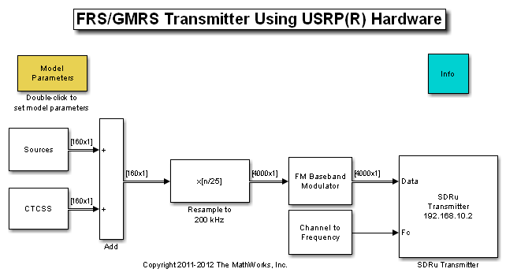
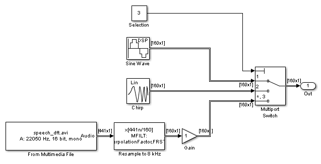
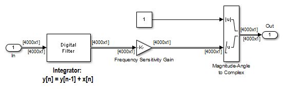

FRS/GMRS Walkie-Talkie Transmitter with USRP® Hardware
This model shows how to use the Universal Software Radio Peripheral® (USRP®) device with Simulink® to implement a walkie-talkie transmitter. The specific radio standard that this example follows is FRS/GMRS (Family Radio Service / General Mobile Radio Service) with CTCSS (Continuous Tone-Coded Squelch System). You can listen to the transmitted signal using a commercial walkie-talkie device.
In order to run this model, you need a USRP® board with an appropriate transmitter daughterboard that supports the UHF 462-467 MHz band (for example, WBX). Please refer to Getting Started for details on configuring your host computer to work with the SDRu Transmitter block.
This example is designed to work with USA standards for FRS/GMRS operation. The technical specifications for these standards can be found at [1] and [2]. Operation in other countries may or may not work.
Contents
Overview
Walkie-talkies provide a subscription-free method of communicating over short distances. Although their popularity has been diminished by the rise of cell phones, they are still useful when lack of reception or high per-minute charges hinders the use of cell phones.
Modern walkie-talkies operate on the FRS/GMRS standards. Both standards use frequency modulation (FM) at 462 or 467 MHz, which is in the UHF (Ultra High Frequency) band. The USRP® device in this example will transmit messages at either 462 or 467 MHz, in a manner that is compatible with FRS/GMRS devices.
Structure of the Example
This is the top-level block diagram of the model:
Source Signals
Below is the subsystem of sources for the model:
The source signal can be a pure tone sine wave, a chirp signal, or a multimedia file. To switch between these sources, double-click the Model Parameters block to bring up a GUI. This GUI also allows you to set the pure tone frequency or the chirp signal target/sweep time (which controls the duration of the chirp signal). This example works properly with tones as low as 500 Hz and as high as 4 kHz.
When using a multimedia file, a resampler converts the sample rate from 22050 Hz to 8 kHz. This provides a convenient intermediate sample rate from which to resample to the final 200 kHz rate, consistent with the sample rate of the USRP® hardware in this example.
Continuous Tone-Coded Squelch System (CTCSS)
Walkie-talkies operate on a shared public channel, allowing multiple users to access the same channel simultaneously. The CTCSS [3] method filters out undesired communication or interference from these other users by generating a tone between 67 Hz and 250 Hz and transmitting it along with the source signal. The receiver contains logic to detect this tone, and acknowledges a message if the detected tone matches the code setting on the receiver. The receiver filters the tone out, so that the user will not hear the tone.
The CTCSS tone generator generates a continuous phase sine wave with frequency corresponding to the selected private code. The amplitude of the tone is usually 10%-15% of the maximum amplitude of the modulating signal. Note that since the maximum amplitude of all the source signals is 1, the default amplitude of 0.1 for the CTCSS tone corresponds to 10% of the modulating signal's maximum amplitude.
Resampler and FM Modulator
An FIR Interpolator block converts the sampling rate of the sum of the modulating signal and CTCSS tone to match the USRP® device's sampling rate of 8 kHz * 25 = 200 kHz. The resampling filter is designed using the MFILT object from the DSP System Toolbox.
Below is the block diagram of the FM Baseband Modulator subsystem:
The example implements the FM modulator using a simple digital IIR filter as an integrator. The frequency sensitivity parameter (K) in the model is related to the frequency deviation (FD) by K=FD/A*(2*pi*Ts), where FD is 2.5 kHz, A is the maximum amplitude of the modulating signal, and Ts is the inverse of the sampling rate of SDRu Transmitter block, or 1/(200 kHz) = 5e-6 seconds. The current value of K is computed assuming A = 1. It should be changed if you change the signal source maximum amplitude.
Running the Example
Turn on your walkie-talkie, set the channel to be one of the 14 channels (numbered 1 to 14) and the private code to be either one of the 38 private codes (numbered 1 to 38) or 0, in which case no squelch system is used and all received messages are accepted. Note that the private codes above 38 are digital codes and are not implemented in this example.
Set the channel and private code in the Model Parameters GUI so that they match the walkie-talkie. Run the model and see if you can hear the voice or tone output from the walkie-talkie. If you cannot, try adjusting the amplitude parameter slightly upward. You can change the channel and private code, as well as toggle between the pure tone, the chirp signal, and the multimedia file without stopping and restarting the model.
If you hear some dropouts or delay in the sound, run the model in Accelerator mode. From the model menu, select Simulation->Accelerator, then click the run button. If you still experience dropouts or delay in Accelerator mode, try running the model in Rapid Accelerator mode.
You can also run this model alongside an additional USRP® device running the FRS/GMRS receiver example, instead of with a commercial walkie-talkie.
Exploring the Example
Due to hardware variations among FRS radios and the USRP® boards, you may not hear continuous transmission on your FRS radio. In that case, you can vary the gain of the source signals in the Sources block and examine the resulting behavior.
Part 95.637 (Modulation standards) of the FCC wireless standards [4] states that the maximum frequency deviation (FD) is 2.5 kHz for FRS and 5 kHz for GMRS. In practice, it is usually set to 2.5 kHz for both systems. If the maximum signal amplitude increases, the frequency sensitivity parameter (K) should decrease. Otherwise, the receiving walkie-talkie will not decode the CTCSS code correctly. You can try to use a different signal with different values for K to see if your walkie-talkie works properly. If FD is too large, you may not hear anything from your receiver when using a non-zero CTCSS private code. You may still hear the transmitting signal if you use code 0, which disables the squelch system. This indicates that the CTCSS decoding of the non-zero code is not correct.
You can reduce the amplitude of the CTCSS tone to determine the minimum amplitude required for your receiver to work correctly.
References
Copyright Notice
USRP® is a trademark of National Instruments Corp.